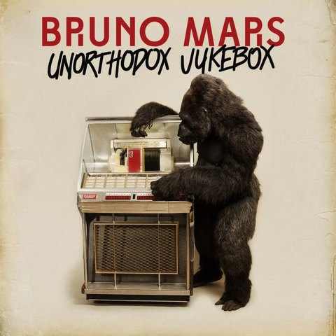
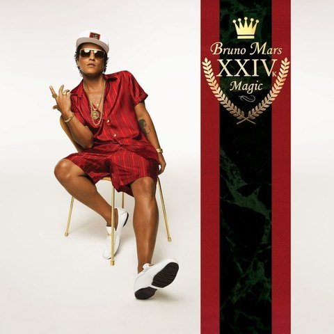
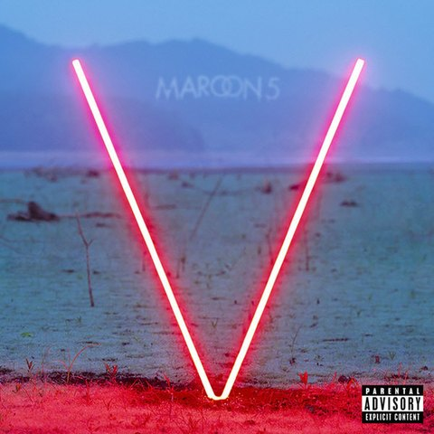
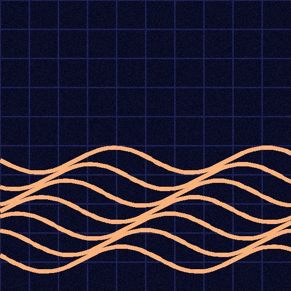
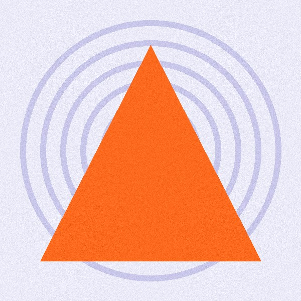
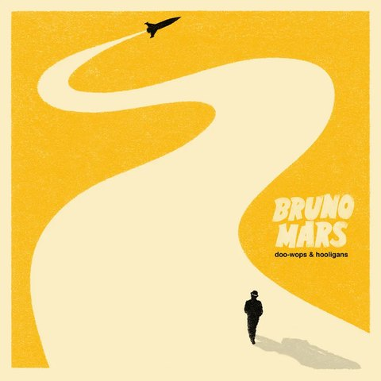
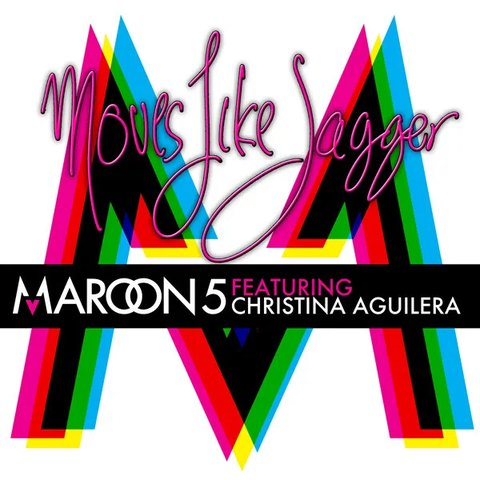
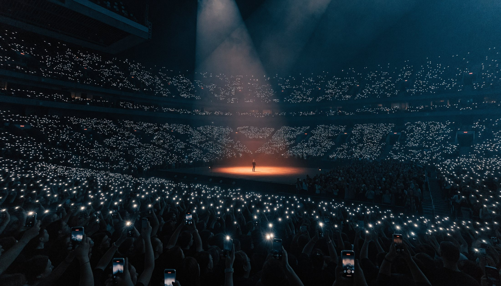
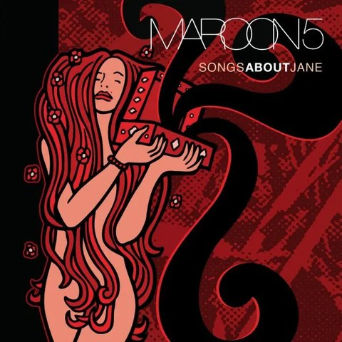
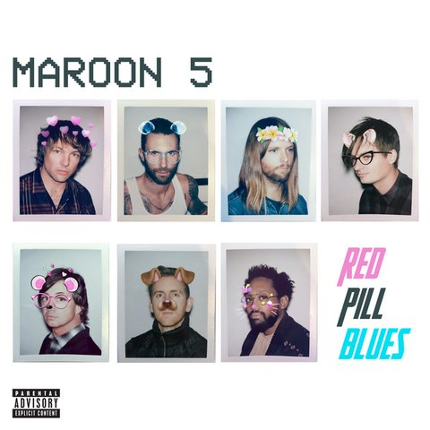

“처음 보는 해외 밴드나 인디 아티스트가 많아서, 어떤 노래를 예습해야 할지 유튜브랑 멜론을 뒤지다 진이 다 빠져요.”
라인업 전체를 예상 셋리스트 순서로 한 번에 담아 드려요
셋리스트를 완벽하게 예습하고, 벅찬 여운을 영원히 복습하는 가장 스마트한 방법. 내가 갈 공연의 예상 셋리스트를 순서 그대로 Spotify 플레이리스트에 담아 드려요.

매년 페스티벌과 내한 공연을 빠짐없이 찾아다니는 음악 덕후들이 가장 많이 털어놓은 두 가지 고민에서 셋리뷰가 시작됐어요.
“처음 보는 해외 밴드나 인디 아티스트가 많아서, 어떤 노래를 예습해야 할지 유튜브랑 멜론을 뒤지다 진이 다 빠져요.”
“막상 공연장에 갔는데 모르는 노래가 나와서 멍하니 서 있었고, 다 같이 떼창하는 타이밍을 놓쳐서 너무 아쉬웠어요.”
예습부터 현장 싱크, 그날의 복습까지. 덕질의 모든 순간을 세 단계로 이어요.




내가 갈 공연을 선택하면 출연 아티스트의 최근 투어 기반 예상·확정 셋리스트가 Spotify 플레이리스트로 자동 연동돼요.
긴 곡이라도 공연에서 터지는 하이라이트 구간과 관객 떼창 포인트가 타임라인으로 표시돼요.
공연 중 혹은 직후, 아티스트가 방금 부른 실제 셋리스트가 실시간 업데이트되며 그날의 감동을 복습할 수 있어요.
최근 투어에서 실제로 연주된 곡과 순서를 바탕으로 예상 셋리스트를 만들어요. 확정 셋리스트가 공개되면 자동으로 바뀌고, 곡마다 꼭 들어야 할 구간만 골라 들을 수 있어요.

곡마다 관객이 실제로 함께 부르는 구간을 '떼창 지수'로 알려드려요. 예습 모드에서 그 부분만 반복해서 따라 불러 보세요.

네 가지 신호를 합쳐 곡의 구간마다 0~100점을 매겨요. 70점 이상인 구간을 떼창 포인트로 표시하고, 90점 이상은 '필수 떼창'으로 강조해요.
최근 투어의 공개 라이브 영상 음원에서 관객 합창 소리가 보컬만큼 커지는 구간을 찾아내요.
아티스트가 마이크를 관객에게 넘기거나 후렴을 반복하는 구간이 여러 공연에서 되풀이됐는지 확인해요.
공연을 다녀온 셋리뷰 사용자가 현장에서 누른 "여기서 떼창!" 태그를 모아 반영해요.
후렴 반복 횟수, 따라 부르기 쉬운 멜로디, 박수·구호 구간 같은 곡의 구조를 분석해요.
공연 중에도, 끝난 직후에도. 아티스트가 실제로 부른 셋리스트가 곡 단위로 업데이트돼요. 앙코르에 깜짝 등장한 곡까지 놓치지 않고, 집에 가는 길에 그날의 감동을 Spotify로 그대로 복습하세요.


This Love 연주 완료
Girls Like You 연주 완료그날 실제로 불린 셋리스트, 내가 함께한 떼창, 예상과 달랐던 깜짝 곡까지 한 장의 복습 카드로 정리해 드려요. 인스타그램 스토리로 바로 공유하고, 시즌이 끝나면 나만의 공연 연대기로 모아 보세요.
공연이 가까워질수록 남은 예습 곡을 알려드려요. 하루에 몇 곡씩 나눠 들으면 되는지도 계산해 드려요.
| D-DAY | 공연 | 하루 권장 | 예습률 | 바로가기 |
|---|---|---|---|---|
| D-12 | Bruno Mars 내한 공연내한 공연 · 예상 20곡 |
하루 1곡 | 40% |
예습 이어하기 → |
| D-26 | Maroon 5 내한 공연내한 공연 · 예상 18곡 |
하루 1곡 | 22% |
예습 이어하기 → |
| D-41 | 록 페스티벌 DAY 1록 페스티벌 · 9팀 64곡 |
하루 2곡 | 9% |
예습 이어하기 → |
| D-58 | 뮤직 페스티벌뮤직 페스티벌 · 12팀 81곡 |
하루 2곡 | 0% |
예습 이어하기 → |
공연 수에 상관없이 모든 기능을 쓸 수 있어요. 언제든 해지할 수 있고, 해지해도 만들어 둔 Spotify 플레이리스트는 그대로 남아요.
더 궁금한 점은 [고객센터 이메일]로 문의해 주세요.
2026년 11월에 정식 출시돼요. 출시 알림을 신청하시면 가장 먼저 알려드릴게요.
출시 시점에는 Spotify를 지원해요. 예습·복습 플레이리스트가 내 Spotify 계정에 자동으로 저장되고, 곡 재생은 Spotify 앱에서 이뤄져요.
셋리뷰 멤버십은 월 4,900원이에요. 등록하는 공연 수와 관계없이 모든 기능을 쓸 수 있고, 언제든 해지할 수 있어요.
아티스트의 최근 투어에서 실제로 연주된 곡과 순서를 바탕으로 예측해요. 확정 셋리스트가 공개되거나 공연이 시작되면 실제 순서로 자동 업데이트돼요.
현장 합창 감지(40%), 투어 기록(25%), 셋리뷰 사용자의 떼창 태그(25%), 곡 구조(10%)를 합쳐 0~100점으로 매겨요. 70점 이상은 떼창 포인트, 90점 이상은 필수 떼창으로 표시돼요.
내 공연으로 등록한 무대는 셋리스트가 곡 단위로 업데이트될 때마다 앱 알림으로 알려드려요.
Spotify에 저장된 플레이리스트는 해지 후에도 그대로 남아요. 다만 자동 갱신과 실시간 싱크는 멈춰요.
2026년 11월 출시와 동시에 알려드릴게요.